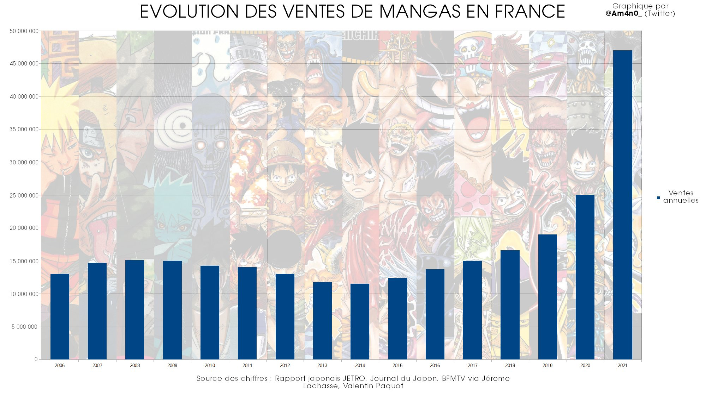
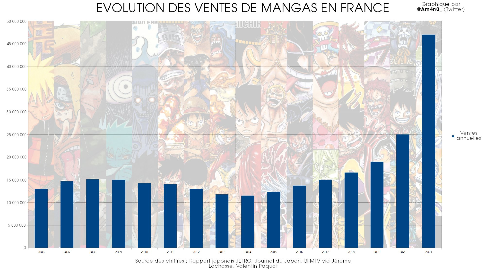

Pendant des décennies, le Japon a brillé en tant que pilier mondial dans le domaine de la technologie, grâce à un héritage d'innovation catalysant de nombreuses avancées majeures dans nos vies, travail et interactions. À travers ses entreprises emblématiques, ses recherches de pointe et sa culture de l'ingéniosité, le Japon continue d'exercer une influence considérable sur le monde technologique.
L'émergence fulgurante japonaise dans le secteur technologique trouve ses racines dans la seconde moitié du XXe siècle. À la suite des dévastations causées par la Seconde Guerre mondiale, le pays a opté pour une voie de reconstruction axée sur l'innovation et la modernisation. Des géants tels que Sony, Panasonic, Toshiba et Canon dominent l'industrie électronique, entrainant des produits révolutionnaires en établissant de nouvelles normes de qualité et de fiabilité.
Parmi leurs multiples contributions, le Japon impactera grandement le divertissement moderne grâce à leur rôle dans l’industrie du jeu vidéo. Des entreprises comme Nintendo et Sony ont introduit des consoles de jeux révolutionnaires telles que la Nintendo Entertainment System (NES) et la PlayStation, redéfinissant l'expérience de jeu tout en ouvrant de nouvelles perspectives sur l'industrie du divertissement interactif.
Cependant, le leadership technologique de celle-ci dépasse largement le domaine des produits tout publique. De plus, le pays excelle dans les secteurs tels que la robotique, l'intelligence artificielle (IA) et la technologie des semi-conducteurs. Des entreprises telles que Honda et Toyota repoussent les limites de la robotique avec leurs robots humanoïdes avancés, tandis que les instituts de recherche japonais mènent la marche dans l'exploration de l'IA et de ses applications dans divers domaines tel que la santé et la finance.
Le Japon se distingue comme un leader mondial dans le développement des technologies environnementales et durables. Tandis que le monde s'efforce de lutter contre le changement climatique, les entreprises japonaises, elles, investissent massivement dans des initiatives telles que les véhicules électriques, les énergies renouvelables et le stockage d'énergie. Facilitant ainsi la contribution dans le façonnement d’un avenir plus durable pour la planète.

Le pays est conscient des défis qui accompagnent leur statut de leader mondial et s'efforce de rester compétitif dans un environnement technologique en constante évolution, malgré les défis économiques internes. Son engagement envers l'innovation, la qualité et l'excellence reste inébranlable.
La position du Japon en tant que pilier de la technologie est indéniable mondialement. De leur secteur de l'électronique, robotique jusqu’à l'IA, le Japon continue d’influencer le paysage technologique mondial à travers son esprit créatif et ingénieux, étant prêt à relever les multiples défis du XXIe siècle tout en façonnant l'avenir de la technologie.
 
